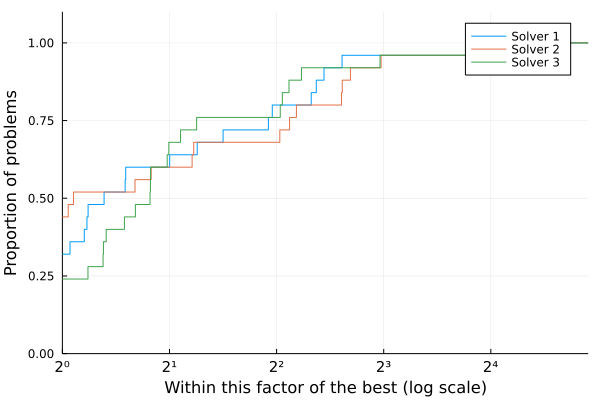

by Abel Soares Siqueira and Dominique Orban
?style=flat-square&labelColor=hsl(46,30%25,30%25))

This tutorial is essentially a collection of examples.
Performance profiles are straightforward to use. The input is a matrix T with entries T[i,j] indicating the cost to solve problem i using solver j. Cost can be, for instance, elapsed time, or number of evaluations. The cost should be positive. If any cost is zero, all measures will be shifted by 1.
Basic usage:
using BenchmarkProfiles, Random, Plots
Random.seed!(0)
T = 10 * rand(25, 3)
performance_profile(PlotsBackend(), T, ["Solver 1", "Solver 2", "Solver 3"])

A negative or infinite cost indicates a failure:
T[2:20,1] .= Inf
performance_profile(PlotsBackend(), T, ["Solver 1", "Solver 2", "Solver 3"])

Here's an example with a strongly superior solver.
T[:,2] = 100T[:,3]
performance_profile(PlotsBackend(), T, ["Solver 1", "Solver 2", "Solver 3"])

Plots arguments can be passed to performance_profile() or used as they normally would be with Plots. In the example below, we pass xlabel to performance_profile and set ylabel through ylabel!.
using Plots
T = 10 * rand(25, 3)
performance_profile(PlotsBackend(), T, ["Solver 1", "Solver 2", "Solver 3"],
lw=2, c=:black, linestyles=[:solid, :dash, :dot], xlabel="τ")
ylabel!("ρ(τ)")